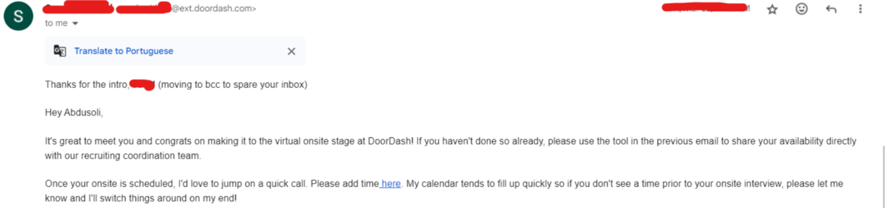

In February 2024, I applied to DoorDash with a referral from a friend. A recruiter reached out to me in March to schedule a phone interview. I was aiming for an E4 position, so I dedicated a week to preparing by solving algorithm and data structure questions on platforms like LeetCode and HackerRank, with a particular focus on DoorDash-tagged questions.
DoorDash is an American company operating online food ordering and food delivery. With a 56% market share, DoorDash is the largest food delivery platform in the United States.
The phone interview lasted around an hour. After a brief 5-minute introduction, I was presented with an algorithmic challenge, a LeetCode hard problem that I solved using Dijkstra's algorithm within 40 minutes. I ran several test cases to ensure the solution was correct, and after solving it, I explained the time and space complexities to the interviewer. The interviewer then asked a few follow-up questions about the Dijkstra algorithm. Two days later, I received an email from the recruiter informing me that I had passed this round and was invited to select dates for an onsite interview. I chose April 18th.
The onsite interview comprised four rounds:
For preparation, I continued solving LeetCode questions and worked on low-level system design challenges like developing an Elevator system or Hotel management system using Object-Oriented Programming principles. For the Systems Design interview, I read Alex Xu’s System Design Interview Part 1 and watched several YouTube videos on system design. I also familiarized myself with DoorDash's mission and values for the behavioral round.
The first round was a coding challenge where I was asked to implement a new feature in an API endpoint code using Java. The problem description was lengthy, and it took me about 15 minutes just to fully understand it. Although I started coding while explaining my thought process, I couldn’t finish the implementation within the 35-minute timeframe, nor could I run the test cases. I was dissatisfied with my performance in this round.
The second round lasted 1 hour and 20 minutes. The first 30 minutes involved behavioral questions and a discussion about my past projects. Following that, the interviewer asked me to design an online rating system using an online drawing tool. I began by clarifying the requirements and sketching out the main components, but the interviewer frequently asked in-depth questions about my choices, which I found challenging since I hadn’t prepared extensively for such deep system design discussions.
After a 30-minute break, the third round focused on debugging. I was given Java code and asked to add new features and fix unit tests. This round went relatively well—I completed about 90% of the task and successfully ran the unit tests.
The final round was a behavioral interview with an Engineering Manager. This was a relaxed session where we discussed my previous experience and my motivation for wanting to work at DoorDash.
After the interview, I felt uncertain about my performance, particularly in the first two rounds. Five days later, I received a rejection email with a one-year cooldown period. Reflecting on the experience, I realized that I had over-prepared for LeetCode-style questions, which weren’t emphasized in the interview. Despite the outcome, it was a valuable learning experience.